Targets
StellarMate Targets is the StellarMate Planning tool to streamline your observation session. Search from thousands of objects and filter them according to criteria important to every astrophotographer.
Add objects of interest to a quickly accessible Favorites list, or create and manage lists for your seasonal targets. Use the almanac info box to find Lunar, Solar, and Twilight times.
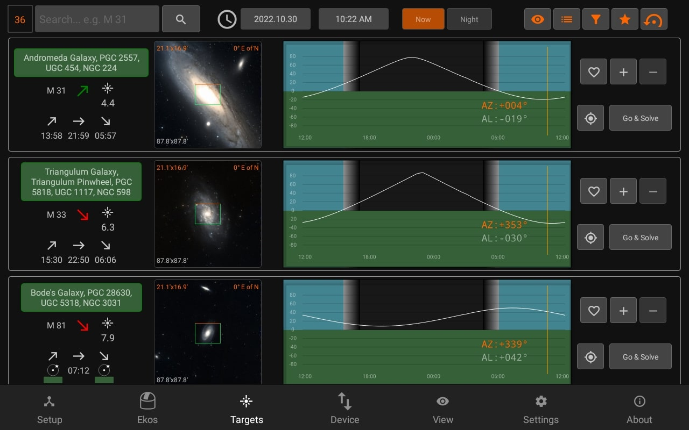
Date & Time:
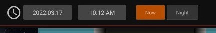
You can preview the targets available at a different date or time by changing the settings (This option is disabled if Ekos is running)
Sun/Moon Visibility
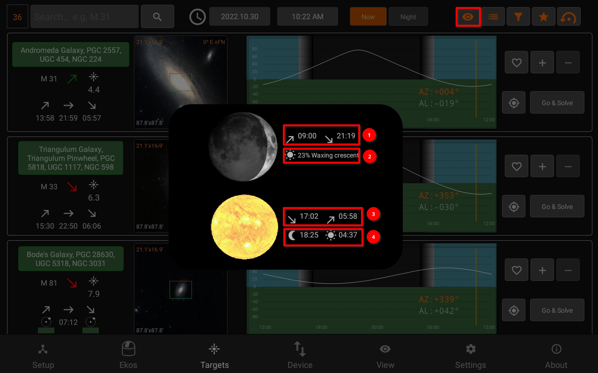
- Moon rise/set times
- Illumination percentage and lunar phase name
- Sunset/Sunrise
- Astronomical Twilight Dusk/Dawn
Filters
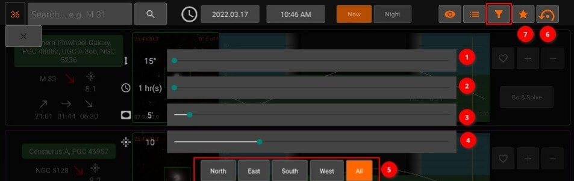
- Minimum object alititude in degrees.
- Minimum duration in hours where the object must meet the altitude condition above. For example, if altitude is 20 degrees, and duration is two hours, then only objects that remain above 20 degrees for at least two hours are going to be included in the search results.
- Minimum Field of View (FOV) in arcminutes. This is only applicable to extended objects like nebulae and galaxies and not to point sources like stars.
- Maximum Magnitude. Lower it to limit it to more bright objects.
- Filter the objects by type.
- Reset all filters to default value.
- Filter the objects by their horizontal direction.
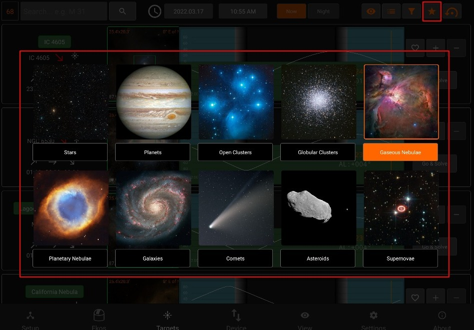
Search Results
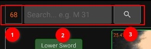
- Number of results
- Filter by object name (only filters currently displayed results)
- Extended Search: You can search for an object by name only without adjusting any filters. This would search for ALL objects of all types regardless of filters. If the object is found, it is then added to the My Searches list.
FOV Profile
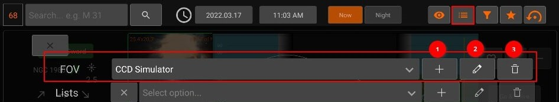
You can overlay a Field-of-View (FOV) indicator on the top of the displayed image. This aids in target framing. By default, the FOV rectangle color is green with the top marked in orange. The top coincides with your camera/frame top. Using the overlay helps to determine exactly how l the target appears in a captured image.
All units are in arcminutes. 1 arcminute is 1/60 of a degree. For reference, the Moon is 30 arcminutes or half a degree across the sky.
When the equipment profile is running, the FOV for each connected camera is automatically generated. You can simply select it from the dropdown menu to activate it. Furthermore, you can add your own FOV indicators manually as illustrated below.
In order to use the Framing Assistant, it is necessary to select an FOV profile first.
- FOV profile dropdown
- Add | Edit | Delete (FOV profile)
- Exit list (returns to normal targets browsing)
Adding an FOV profile in (5) opens up the following panel:
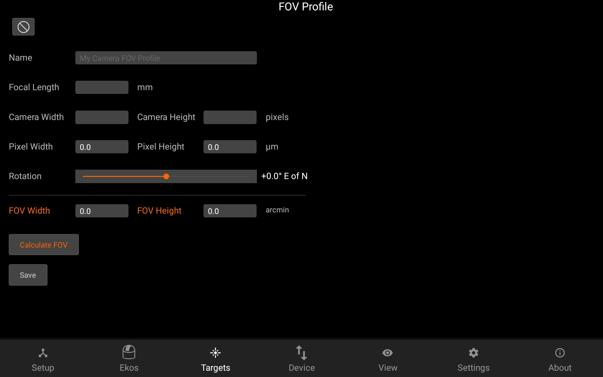
After setting the Focal Length, Camera width & height and pixel width & height, the FOV can be calculated by pressing the Calculate FOV button.
Lists
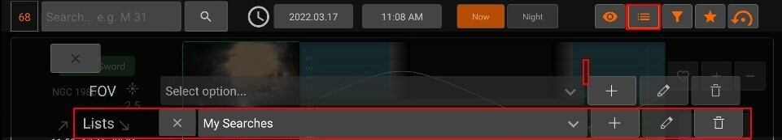
It contains Lists dropdown. Add, Edit the list name or Delete the selected list.
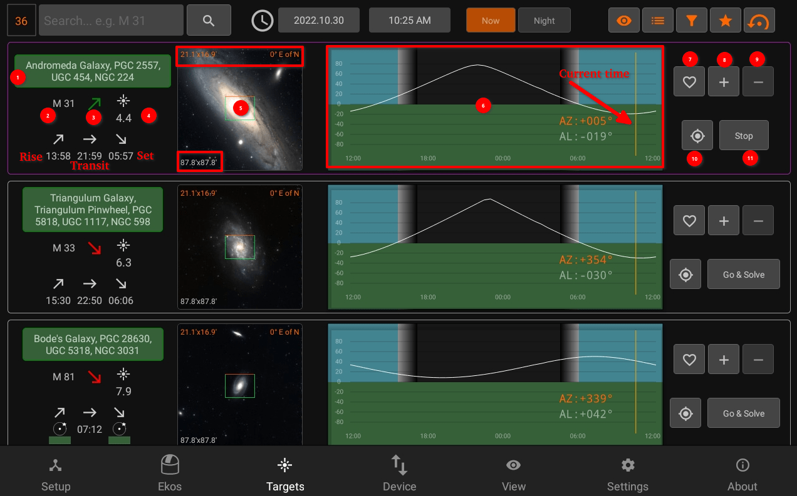
Target Info
- Object designations.
- Object name.
- Object Phase:
- Green: Object is rising
- Yellow: Object is transiting the meridian
- Red: Object is sitting
- Magnitude
- Object Image and FOV Overlay
- Altitude vs. Time Plot. The X-Axis designates time starting from 12 PM to 12 AM, with local Midnight (00:00) at the center of the image. The yellow vertical line indicates the current time. Next to the current time line are the object’s current Azimuth and Altitude values in degrees.
- Add to Favorites
- Add to custom list
- Remove from current list
- Go & Solve: Go to object and plate solve (required to use Framing Assistant)
When Ekos is offline, Targets will be used to schedule the coordinates information to Scheduler.
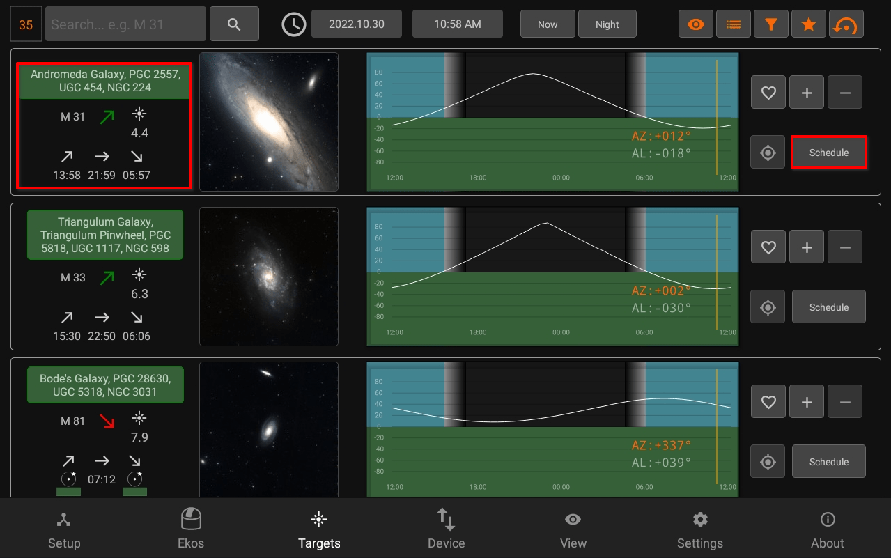
When Ekos is offline, you can also use framing assistant to Schedule the coordinates to Scheduler.
The border of each target displays it's status:
- Idle: Grey
- Plate-Solving: Yellow
- Skewing to target: Purple
- Plate-solving successful and target is centered: Green
Plate-solving unsuccesful or beyond acceptable accuracy threshold: Red